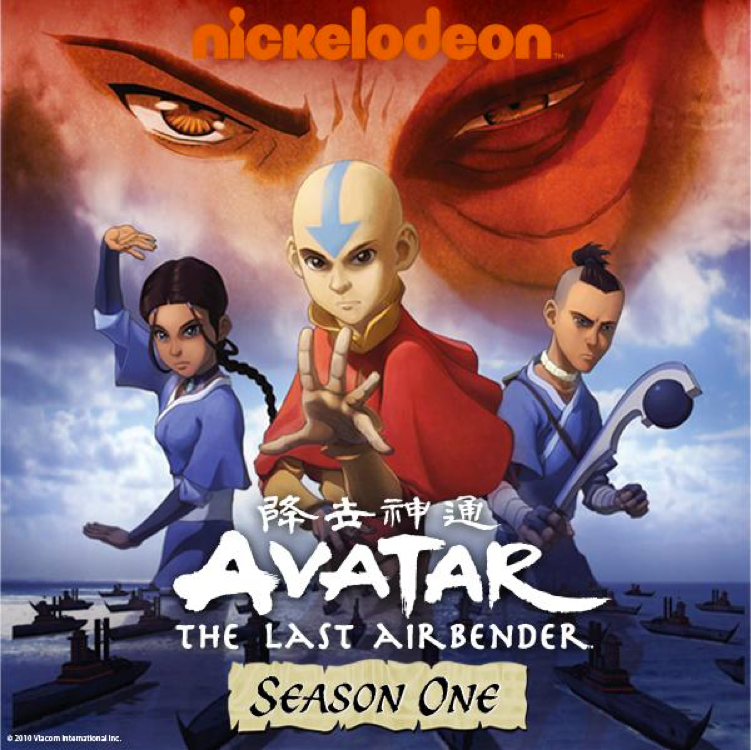
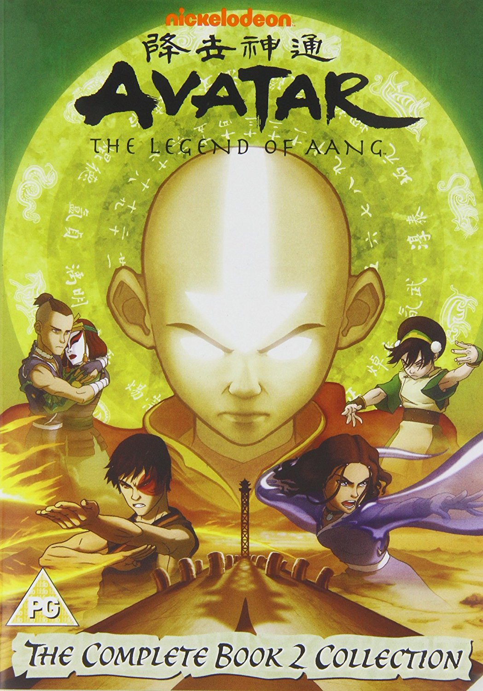
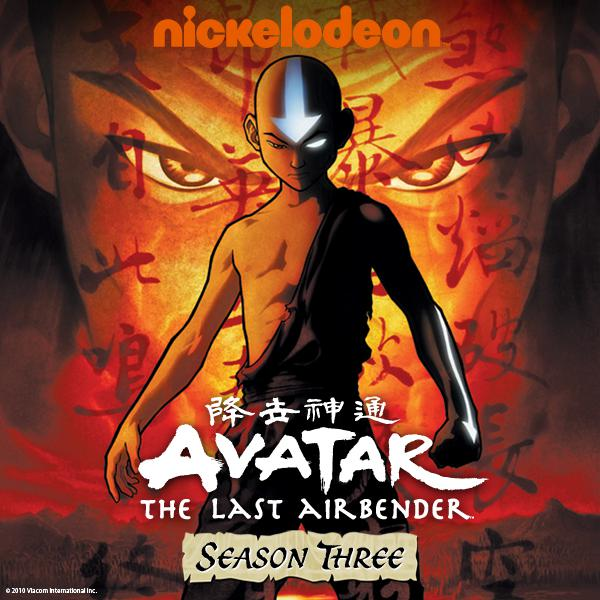

Season 1
Season one (Book One: Water) of Avatar: The Last Airbender, an American animated television series produced by Nickelodeon Studios, aired 20 episodes from February 21, 2005 to December 2, 2005. The series was created by Michael Dante DiMartino and Bryan Konietzko, and starred Zach Tyler Eisen, Mae Whitman, Jack DeSena, Dante Basco, Dee Bradley Baker, Mako Iwamatsu and Jason Isaacs as the main character voices.
The season revolves around the protagonist Aang and his friends Katara and Sokka going on a journey to the North Pole to find a Waterbending master to teach Aang and Katara. The Fire Nation is waging a seemingly endless war against the Earth Kingdom and the Water Tribes, following the long-ago disappearance of the Air Nomads. Aang, the current Avatar, must master the four elements (Air, Water, Earth, and Fire) to end the war. Along the way, Aang and his friends are chased by various pursuers: banished Fire Nation Prince Zuko, along with his uncle and former general Iroh, and Admiral Zhao of the Fire Navy.
Each episode of Season One attracted more than a million viewers on its first airing. Season One won "Best TV Series" and "Best Animated Television Series" in the boys 9- to 14-year-old demographic at the 2005 Pulcinella Awards, which gives awards for excellence in animation.
Between January 31, 2006 and September 19, 2006, five DVD sets were released in the United States, each containing four episodes from the season. On September 12, 2006, Nickelodeon also released the "Complete Book 1 Collection Box Set", which contained all of the episodes in the season as well as a special features disc. The original releases were encoded in Region 1, a DVD type that plays only in North American DVD players. From 2007 to 2009, Nickelodeon released Region 2 DVDs, which can play in Europe.
The first book has been adapted into a live-action film, The Last Airbender, directed by M. Night Shyamalan and released in 2010.

Season 2
Season Two (Book Two: Earth) of Avatar: The Last Airbender, an American animated television series on Nickelodeon, first aired its 20 episodes from March 17, 2006 to December 1, 2006. The season was created and produced by Michael Dante DiMartino and Bryan Konietzko, and starred Zach Tyler Eisen, Mae Whitman, Jack DeSena, Jessie Flower, Dante Basco, Dee Bradley Baker, Mako Iwamatsu and Grey DeLisle as the main character voices.
In this season, Aang and his friends Katara and Sokka are on a quest to find an Earthbending teacher which finishes when they recruit Toph Beifong. After finding important information concerning the war with the Fire Nation, Appa ends up kidnapped. Their journey leads to Ba Sing Se, the capital of the Earth Kingdom, where they uncover great internal government corruption. Meanwhile, due to their actions at the North Pole, Zuko and Iroh are declared enemies of the Fire Nation and desert their country, becoming fugitives in the Earth Kingdom. Pursuing both Zuko and Aang is Princess Azula, Zuko's younger sister.
Throughout the season's airing, the show received much critical acclaim, with praises such as, "As a flat concept, Avatar: The Last Airbender is nothing special, but in execution, it is head and shoulders above other children's entertainment", and that "as a whole, the look of Avatar is consistently excellent." Season 2 has won multiple awards, including the "Best Character Animation in a Television Production" award from the 34th Annie Awards and the "Outstanding Individual Achievement in Animation" award from the 2007 Emmy Awards.
Between January 23, 2007 and September 11, 2007, Nickelodeon released five DVD sets for the season: four sets containing five episodes each, and a fifth DVD collection of all twenty episodes. All DVDs were encoded in Region 1. In the United Kingdom, only the season boxset was released without being released in four volumes first. The boxset was released on July 20, 2009.
Season 3
Season Three (Book Three: Fire) of Avatar: The Last Airbender, an American animated television series on Nickelodeon, first aired its 21 episodes from September 21, 2007 to July 19, 2008. The season was created by Michael Dante DiMartino and Bryan Konietzko, and starred Zach Tyler Eisen, Mae Whitman, Jack DeSena, Jessie Flower, Dante Basco, Dee Bradley Baker, Greg Baldwin, Grey DeLisle and Mark Hamill as the main character voices.
This third and final season focuses on Aang's quest to defeat the tyrannical Fire Lord. In the season's beginning, protagonist Aang and his friends Sokka, Katara, and Toph are traveling through the Fire Nation, conjuring a plan for invading the Fire Nation and looking for a teacher to teach Aang Firebending. Midway through the season, Aang gathers friends he met in previous episodes and leads a failed invasion into the Fire Nation. Former antagonist and anti-hero Zuko changes sides and joins Aang, serving as his Firebending teacher until the four-part series finale when Aang finally defeats the Fire Lord and ends the one hundred-year war in a surprising way: he uses a new ability to take away Ozai's firebending abilities to avoid violating selfless Air Nomad teachings.
The season is then followed by The Promise, The Search, and The Rift comic series that take place one or two years later after the hundred-year war's end.
The final season features twenty-one episodes, one more than the previous two seasons. The season finale consisted of the four episodes airing together as a two-hour television movie. Season Three received a similar positive critical reception to that of the previous seasons. The season, and especially the finale, received much critical acclaim, with praises from sources such as DVD Talk. Between October 30, 2007 and September 16, 2008, Nickelodeon released four DVD volumes and a "Complete Box Set".